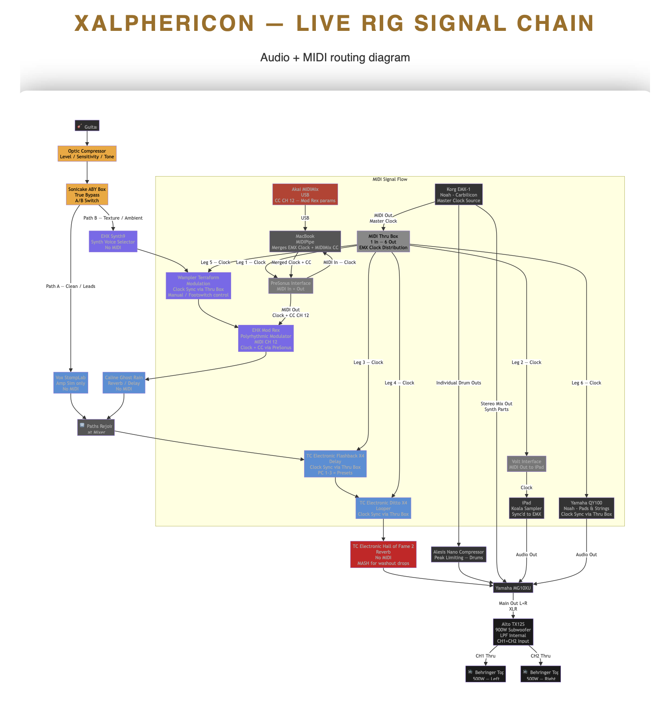

Too much, too soon
There is a miss conception in the electronic music world. You don’t need a lot of gear to play live. I think maybe this has been made worse by the endless gear acquisition syndrome prevalent in musician circles. I’ve been as guilty as anyone. Nobody is immune to FOMO. I know how it is, you watch youtube video after youtube video of music reviews and studios where there is a guy showing off walls full of expensive analog gear.
More often then not, they are known more for gear reviews and running their yappers than actually creating musical art worth listening to. I’m not here to come down on those guys who have the cash to spend equipment. More power to you! For most of us mortals, this isn’t practical or financially sensible.
I did this early on and it slowed me down. It overwhelmed me with too many choices and a sense that I was drowning. Certainly having too much is not conducive to creative flow.
Keeping it simple
Now I only use one hardware synthesizer. My prophet REV2 does every sound you could ever want. I ignore all the noise about it not sounding as warm as other gear. Seriously nobody cares and nobody but other synth nerds will be able to tell the difference in productions or live settings. That’s the truth. It’s not about your tools, it’s about what you do with them that matters.
I also play guitar and even there I’ve kept it simple. I have one acoustic guitar, one electric and one bass guitar. Not top of the line but not the cheapest gear either. The important lesson is to just make music with what you have. We are used to too much abundance and it has distracted many, including myself.
My friend Noah and I started an electronic band together and we are having a barrel of laughs. It’s actually very minimal gear that we use. Noah is a master of the Electribe EMX-1 and I’m a master of the Koala Sampler running on my iphone / ipad. I play electric guitar over top our tracks running into a few simple guitar fx pedals.
- 1 groove box Electribe EMX-1 (drums + synths)
- 1 QY100 (pads and strings)
- 1 sampler (lo-fi, vinyl sample chops)
- 1 guitar (lead + ambient loops)
- 2 audio interfaces (ipad + computer)
- 1 akai midimix midi controller (knobs and faders)
- pedal board
- midi sync’d looper, delay, modulated fx, reverb
- 2 Behringer 500w PA Tops
- 1 900w ALTO Sub-woofer
- 1 Yamaha MG10XU
That setup is about as simple as it gets and it is creatively freeing and focuses us towards creating the most expansive musical vibes within limitations. Even so, it’s a lot of cash for making negative money for our performances. LOL!
Notice I didn’t even mention my prophet rev 2. Only add what is absolutely needed to get the job done. Right now, that puts us over the edge and makes things too complex. Focus on quality not quantity.
A Complicated looking diagram
After preaching all that about simplicity I’m going to turn around and show you a really complicated diagram of our routing. It’s really not that bad but it goes to show that if you do keep adding gear this stuff gets crazy complicated fast to pull off live, where you are under pressure and against the clock. Logistics become a nightmare the more you add to the mix.
